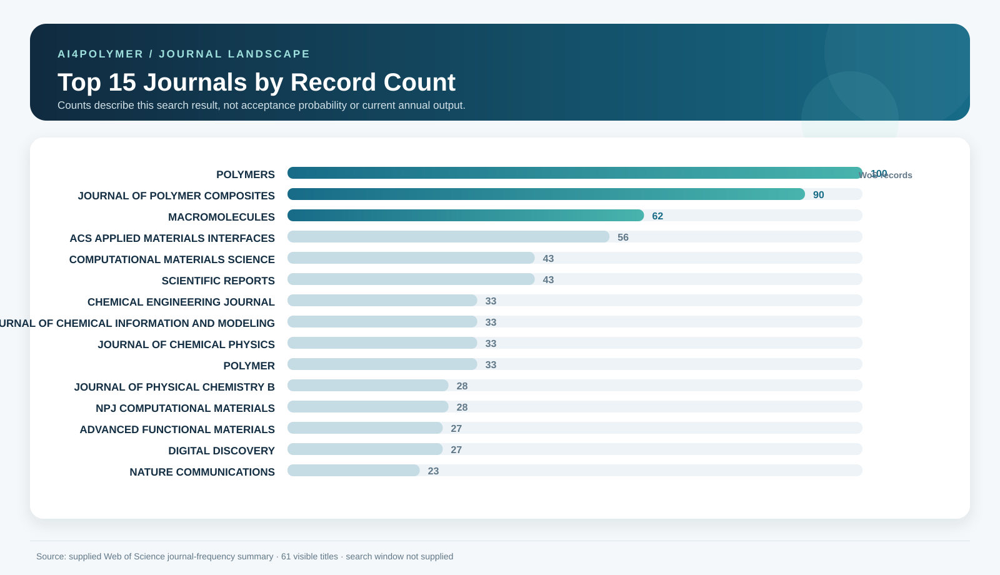
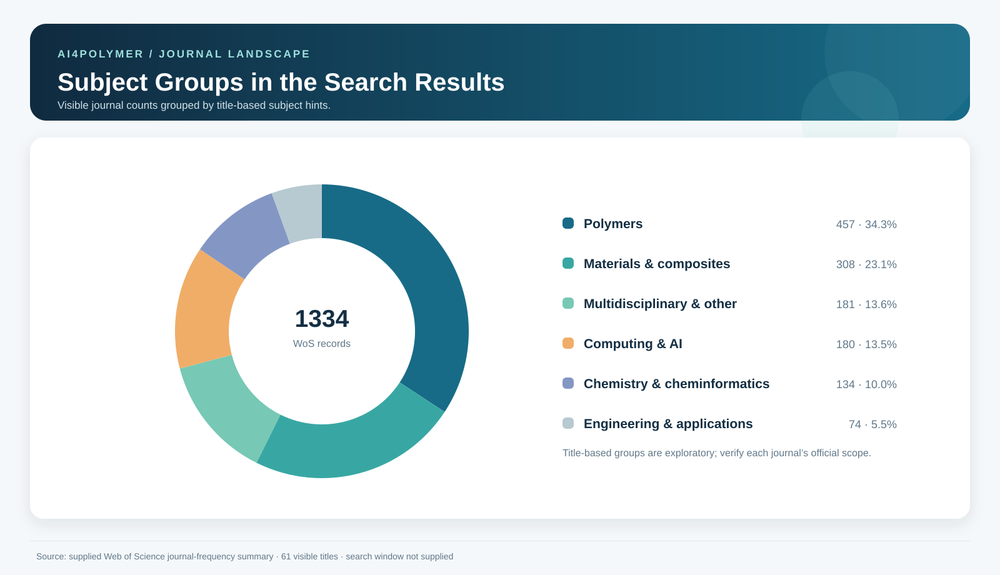
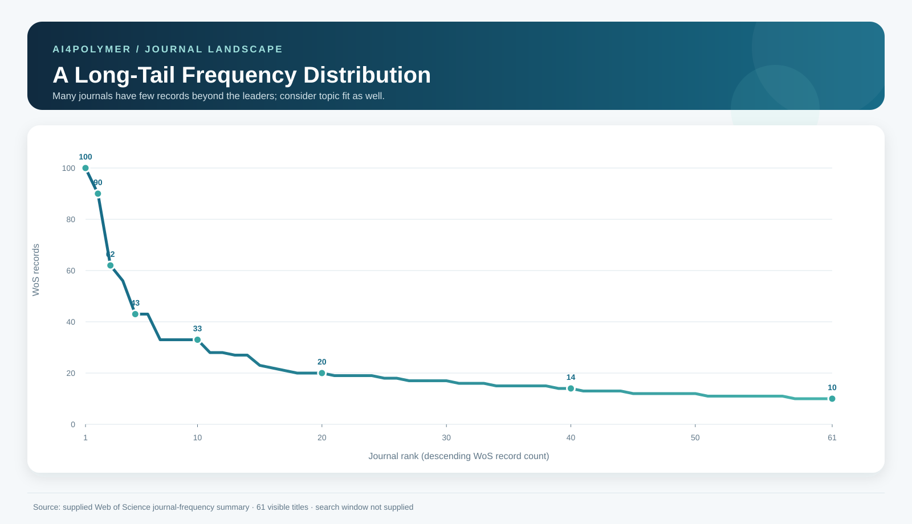

—Counts come from the supplied WoS summary
Web of Science journal data updated through October 11, 2026. The supplied
analyze-all.txt contains 977 journal titles and 3,267 Web of Science records. Search query and publication-year window were not supplied. The default frequency threshold is 10 and can be adjusted. Publisher-source profiles now cover all 20 most frequent titles; one title/ISSN identity requires Clarivate confirmation. Exact current SCIE/ESCI collection status was not independently reconciled against Clarivate for every title; use the live Master Journal List by ISSN before submitting.Web of Science landscape
Three views of all 977 journal titles: leading journals, title-based topic distribution, and the long-tail pattern. All figures use the supplied summary.



Note: The source does not provide its search window. WoS counts are not recent annual output or acceptance rates. Subject labels are exploratory.
Find journals for your research
This is an explainable first-pass screen, not an acceptance-probability prediction. Matching uses topic, research mode, OA preference, and historical WoS frequency. Check recent papers and official author guidance before submitting.
Results explain each matching signal. Factors without official data are not scored. Recommendations cover all 977 supplied journal titles; the default minimum count is 10.
Publisher-checked priority journals
All top 20 by supplied WoS count have a profile with scope, article formats, metrics, stage-labeled timing, OA/fees, ISSN, and source links. Unpublished or non-comparable values are labeled. Identity/indexing check required: the supplied title JOURNAL OF POLYMER COMPOSITES has not yet been matched to a Clarivate Master Journal List record by ISSN.
Evidence levels and timing definitions
Official sources checked:Publisher journal pages, author guidelines, and APC pages were checked on 2026-10-11. Recheck dynamic metrics, fees, and policies before submission.
Discovery list:Journal titles, record counts, and percentages come from the supplied Web of Science summary. Title-based groups are for browsing only.
Not public / verify separately:Acceptance rates, desk-rejection rates, review-send rates, review quality, author-reported timing, copyright, and data/code policies are not filled in without comparable sources.
Timing:“Submission to first decision” may include desk screening. “Submission to acceptance” includes author revision time. Acceptance-to-online publication is a separate stage. A fast first decision does not mean fast external review.
Metrics:JIF/JCR, CiteScore/Scopus, SJR/SCImago, and CAS rankings use different years and subject categories; they are not interchangeable.
Source limitations
Recommended next data
The 977-title summary is complete for the supplied export, but it lacks the search query, publication-year window, DOI-level records, document types, and publication dates. Add those fields to support trend analysis and recent-paper matching.